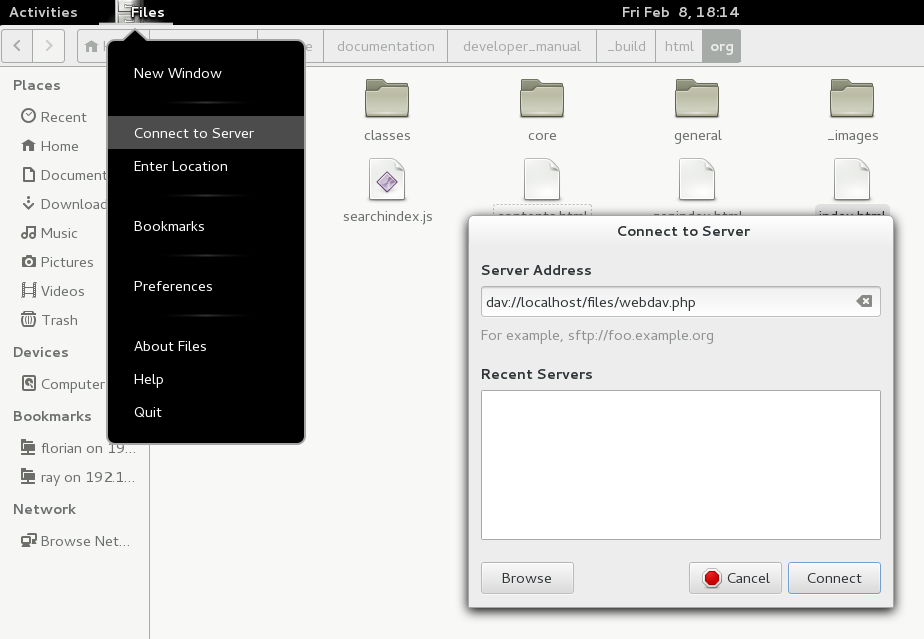

Πρόσβαση σε αρχεία Nextcloud χρησιμοποιώντας το WebDAV
Nextcloud fully supports the WebDAV protocol, and you can connect and synchronize with Nextcloud Files over WebDAV. In this chapter, you will learn how to connect Linux, macOS, Windows, and mobile devices to your Nextcloud server.
WebDAV stands for Distributed Authoring and Versioning. It is an HTTP extension that makes it easy to create, read, and edit files hosted on remote Web servers. With a WebDAV client, you can access your Nextcloud Files (including shares) on Linux, macOS and Windows in a similar way as any remote network share, and stay synchronized.
Before we get into configuring WebDAV, let’s take a quick look at the recommended way of connecting client devices to Nextcloud.
Official Nextcloud desktop and mobile clients
The recommended way to synchronize a computer with a Nextcloud server is by using the official Nextcloud sync clients. You can configure the client to save files in any local directory and you can choose which directories on the Nextcloud server to sync with. The client displays the current connection status and logs all activity, so you always know which remote files have been downloaded to your PC and you can verify that files created and updated on your local PC are properly synchronized with the server.
The recommended way to synchronize Android and Apple iOS devices is by using the official Nextcloud mobile apps.
To connect the official Nextcloud apps to a Nextcloud server use the same URL you use to access Nextcloud from your web browser - e.g.:
https://cloud.example.com
https://example.com/nextcloud (if Nextcloud is installed in a subdirectory called "nextcloud")
Third-party WebDAV clients
If you prefer, you may also connect your computer to your Nextcloud server by using any third-party client that supports the WebDAV protocol (including what may be built into your operating system).
You can also use third-party WebDAV capable apps to connect your mobile device to Nextcloud.
When using third-party clients, keep in mind that they may not be optimized for use with Nextcloud or implement capabilities you consider important to your use case.
Mobile clients that Nextcloud community members have reported using include:
The URL to use when configuring third-party apps to connect to Nextcloud is a bit lengthier than the one for official clients:
https://cloud.example.com/remote.php/dav/files/USERNAME/
https://example.com/nextcloud/remote.php/dav/files/USERNAME/ (if Nextcloud is installed in a subdirectory called "nextcloud")
Σημείωση
When using a third-party WebDAV client (including your operating system’s built-in client), you should use an application password for login rather than your regular password. In addition improved security, this increases performance significantly. To configure an application password, log into the Nextcloud Web interface, click on the avatar in the top right and choose Personal settings. Then choose Security in the left sidebar and scroll to the very bottom. There you can create an app password (which can also be revoked in the future without changing your main user password).
Σημείωση
In the following examples, you should replace example.com/nextcloud with the URL of your Nextcloud server (omit the directory part if the installation is in the root of your domain), and USERNAME with the username of the connecting user.
See the WebDAV URL (bottom left in settings) on your Nextcloud.
Πρόσβαση σε αρχεία χρησιμοποιώντας Linux
Για να συνδέσετε την εφαρμογή σας για κινητά σε διακομιστή Nextcloud χρησιμοποιήστε μόνο το βασικό URL και το φάκελο ::Μπορείτε να αποκτήσετε πρόσβαση σε αρχεία σε λειτουργικά συστήματα Linux χρησιμοποιώντας τις ακόλουθες μεθόδους.
Διαχειριστής αρχείων Nautilus
When you configure your Nextcloud account in the GNOME Control Center, your files will automatically be mounted by Nautilus as a WebDAV share, unless you deselect file access.
Διαμόρφωση WebDAVΜπορείτε επίσης να προσαρτήσετε τα αρχεία Nextcloud με μη αυτόματο τρόπο. Χρησιμοποιήστε το πρωτόκολλο «davs: //» για να συνδέσετε τον διαχειριστή αρχείων Nautilus στο κοινόχρηστο στοιχείο Nextcloud
davs://example.com/nextcloud/remote.php/dav/files/USERNAME/
Σημείωση
If your server connection is not HTTPS-secured, use dav:// instead
of davs://:

Σημείωση
The same method works for other file managers that use GVFS, such as MATE’s Caja and Cinnamon’s Nemo.
Πρόσβαση σε αρχεία με τον διαχειριστή αρχείων KDE και Dolphin
Μπορείτε να αποκτήσετε πρόσβαση σε αρχεία σε λειτουργικά συστήματα Linux χρησιμοποιώντας τις ακόλουθες μεθόδους.Για να αποκτήσετε πρόσβαση στα αρχεία Nextcloud χρησιμοποιώντας τον διαχειριστή αρχείων Dolphin στο KDE, χρησιμοποιήστε το πρωτόκολλο «webdav: //»
webdav://example.com/nextcloud/remote.php/dav/files/USERNAME/

Διαχειριστής αρχείων NautilusΜπορείτε να δημιουργήσετε έναν μόνιμο σύνδεσμο για τον διακομιστή Nextcloud:
Open Dolphin and click «Network» in the left-hand «Places» column.
Μπορείτε επίσης να προσαρτήσετε τα αρχεία Nextcloud με μη αυτόματο τρόπο. Χρησιμοποιήστε το πρωτόκολλο «davs: //» για να συνδέσετε τον διαχειριστή αρχείων Nautilus στο κοινόχρηστο στοιχείο Nextcloud ::Κάντε κλικ στο εικονίδιο με την ένδειξη ** Προσθήκη φακέλου δικτύου **. Ο διάλογος που προκύπτει θα πρέπει να εμφανίζεται με το WebDAV που έχει ήδη επιλεγεί.
Εάν το WebDAV δεν είναι επιλεγμένο, επιλέξτε το.
Κάντε κλικ στο ** Επόμενο **.
Εισαγάγετε τις ακόλουθες ρυθμίσεις:
Name: the name you want to see in the Places bookmark, for example, Nextcloud.
User: the Nextcloud username you used to log in, for example, admin.
Server: the Nextcloud domain name, for example, example.com (without http:// before or directories afterwards).
Για να αποκτήσετε πρόσβαση στα αρχεία Nextcloud χρησιμοποιώντας τον διαχειριστή αρχείων Dolphin στο KDE, χρησιμοποιήστε το πρωτόκολλο «webdav: //» ::Φάκελος - Εισαγάγετε τη διαδρομή «nextcloud / remote.php / dav / files / USERNAME /».
(Optional) Check the «Create icon» checkbox for a bookmark to appear in the Places column.
Ανοίξτε το Δελφίνι και κάντε κλικ στο «Δίκτυο» στην αριστερή στήλη «Μέρη».(Προαιρετικό) Καταχωρίστε τυχόν ειδικές ρυθμίσεις ή πιστοποιητικό SSL στο πλαίσιο ελέγχου «Port & Encrypted».
Δημιουργία προσθηκών WebDAV στη γραμμή εντολών Linux
Κάντε κλικ στο εικονίδιο με την ένδειξη ** Προσθήκη φακέλου δικτύου **. Ο διάλογος που προκύπτει θα πρέπει να εμφανίζεται με το WebDAV που έχει ήδη επιλεγεί.Μπορείτε να δημιουργήσετε βάσεις WebDAV από τη γραμμή εντολών Linux. Αυτό είναι χρήσιμο εάν προτιμάτε να έχετε πρόσβαση στο Nextcloud με τον ίδιο τρόπο όπως σε οποιαδήποτε άλλη απομακρυσμένη βάση συστήματος. Το παρακάτω παράδειγμα δείχνει πώς να δημιουργήσετε μια προσωπική βάση και να την προσαρμόσετε αυτόματα κάθε φορά που συνδέεστε στον υπολογιστή σας Linux.
Εάν το WebDAV δεν είναι επιλεγμένο, επιλέξτε το.Εγκαταστήστε το «davfs2» Πρόγραμμα οδήγησης συστήματος αρχείων WebDAV, το οποίο σας επιτρέπει να προσαρμόσετε κοινές χρήσεις WebDAV όπως οποιοδήποτε άλλο απομακρυσμένο σύστημα αρχείων. Χρησιμοποιήστε αυτήν την εντολή για να την εγκαταστήσετε στο Debian / Ubuntu
apt-get install davfs2
Κάντε κλικ στο ** Επόμενο **.Χρησιμοποιήστε αυτήν την εντολή για να την εγκαταστήσετε σε CentOS, Fedora και openSUSE
yum install davfs2
Προσθέστε τον εαυτό σας στην ομάδα «davfs2»
usermod -aG davfs2 <username>
Then create a
nextclouddirectory in your home directory for the mount point, and.davfs2/for your personal configuration file:mkdir ~/nextcloud mkdir ~/.davfs2
Copy
/etc/davfs2/secretsto~/.davfs2:cp /etc/davfs2/secrets ~/.davfs2/secrets
Όνομα: Το όνομα που θέλετε να δείτε στον σελιδοδείκτη ** Places **, για παράδειγμα Nextcloud.Ορίστε τον εαυτό σας ως κάτοχο και κάντε τα δικαιώματα μόνο ως κάτοχος ανάγνωσης-εγγραφής
chown <linux_username>:<linux_username> ~/.davfs2/secrets chmod 600 ~/.davfs2/secrets
Χρήστης: Το όνομα χρήστη Nextcloud που χρησιμοποιήσατε για να συνδεθείτε, για παράδειγμα διαχειριστής.Προσθέστε τα διαπιστευτήρια σύνδεσης Nextcloud στο τέλος του αρχείου «μυστικά», χρησιμοποιώντας τη διεύθυνση URL του διακομιστή Nextcloud και το όνομα χρήστη και τον κωδικό πρόσβασης του Nextcloud
https://example.com/nextcloud/remote.php/dav/files/USERNAME/ <username> <password> or $PathToMountPoint $USERNAME $PASSWORD for example /home/user/nextcloud john 1234
Προσθέστε τις πληροφορίες προσάρτησης στο «/ etc / fstab»
https://example.com/nextcloud/remote.php/dav/files/USERNAME/ /home/<linux_username>/nextcloud davfs user,rw,auto 0 0
Διακομιστής: Το όνομα τομέα Nextcloud, για παράδειγμα ** example.com ** (χωρίς ** http: // ** πριν ή κατάλογους μετά).Στη συνέχεια, ελέγξτε ότι προσαρμόζεται και επικυρώνει εκτελώντας την ακόλουθη εντολή. Εάν το ρυθμίσετε σωστά δεν θα χρειαστείτε δικαιώματα root
mount ~/nextcloud
Θα πρέπει επίσης να μπορείτε να το αποσυνδέσετε
umount ~/nextcloud
Φάκελος - Εισαγάγετε τη διαδρομή «nextcloud / remote.php / dav / files / USERNAME /».Τώρα κάθε φορά που συνδέεστε στο σύστημα Linux, το μερίδιο Nextcloud θα πρέπει αυτόματα να τοποθετείται μέσω WebDAV στον κατάλογο «~ / nextcloud». Εάν προτιμάτε να το τοποθετήσετε χειροκίνητα, αλλάξτε το «auto» σε «noauto» στο «/ etc / fstab».
Γνωστά προβλήματα
Πρόβλημα
Ο πόρος δεν είναι διαθέσιμος προσωρινά
Λύση
(Προαιρετικό) Επιλέξτε το πλαίσιο ελέγχου «Δημιουργία εικονιδίου» για να εμφανιστεί ένας σελιδοδείκτης στη στήλη Μέρη.Εάν αντιμετωπίζετε προβλήματα κατά τη δημιουργία ενός αρχείου στον κατάλογο, επεξεργαστείτε το «/ etc / davfs2 / davfs2.conf» και προσθέστε
use_locks 0
Πρόβλημα
Προειδοποιήσεις πιστοποιητικών
Λύση
(Προαιρετικό) Καταχωρίστε τυχόν ειδικές ρυθμίσεις ή πιστοποιητικό SSL στο πλαίσιο ελέγχου «Port & Encrypted».Εάν χρησιμοποιείτε ένα αυτο-υπογεγραμμένο πιστοποιητικό, θα λάβετε μια προειδοποίηση. Για να το αλλάξετε αυτό, πρέπει να διαμορφώσετε το «davfs2» για να αναγνωρίσετε το πιστοποιητικό σας. Αντιγράψτε το «mycertificate.pem» στο «/ etc / davfs2 / certs /». Στη συνέχεια, επεξεργαστείτε το «/ etc / davfs2 / davfs2.conf» και αποσυνδέστε τη γραμμή «servercert». Τώρα προσθέστε τη διαδρομή του πιστοποιητικού σας όπως σε αυτό το παράδειγμα
servercert /etc/davfs2/certs/mycertificate.pem
Πρόσβαση σε αρχεία χρησιμοποιώντας macOS
Σημείωση
The macOS Finder suffers from a series of implementation problems and should only be used if the Nextcloud server runs on Apache and mod_php, or Nginx 1.3.8+. Alternative macOS-compatible clients capable of accessing WebDAV shares include open source apps like Cyberduck (see instructions here) and Filezilla. Commercial clients include Mountain Duck, Forklift, Transmit, and Commander One.
Για πρόσβαση σε αρχεία μέσω του macOS Finder:
From the Finder’s top menu bar, choose Go > Connect to Server…:

When the Connect to Server… window opens, enter your Nextcloud server’s WebDAV address in the Server Address: field, i.e.:
https://cloud.YOURDOMAIN.com/remote.php/dav/files/USERNAME/

Χρησιμοποιήστε αυτήν την εντολή για να την εγκαταστήσετε σε CentOS, Fedora και openSUSE ::Κάντε κλικ στο ** Σύνδεση **. Ο διακομιστής WebDAV θα πρέπει να εμφανίζεται στην επιφάνεια εργασίας ως κοινόχρηστη μονάδα δίσκου.
Πρόσβαση σε αρχεία χρησιμοποιώντας τα Microsoft Windows
If you use the native Windows implementation of WebDAV, you can map Nextcloud to a new drive using Windows Explorer. Mapping to a drive enables you to browse files stored on a Nextcloud server the way you would browse files stored in a mapped network drive.
Στη συνέχεια, δημιουργήστε έναν κατάλογο «nextcloud» στον αρχικό σας κατάλογο για το σημείο προσάρτησης και «.davfs2 /» για το προσωπικό σας αρχείο διαμόρφωσης ::Η χρήση αυτής της δυνατότητας απαιτεί σύνδεση δικτύου. Εάν θέλετε να αποθηκεύσετε τα αρχεία σας εκτός σύνδεσης, χρησιμοποιήστε το Desktop Client για να συγχρονίσετε όλα τα αρχεία στο Nextcloud σε έναν ή περισσότερους καταλόγους του τοπικού σκληρού δίσκου.
Σημείωση
Windows 10 now defaults to allow Basic Authentication if HTTPS is enabled before mapping your drive.
On older versions of Windows, you must permit the use of Basic Authentication in the Windows Registry:
launch
regeditand navigate toHKEY_LOCAL_MACHINE\SYSTEM\CurrentControlSet\Services\WebClient\Parameters.Create or edit the
BasicAuthLevel(Windows Vista, 7 and 8), orUseBasicAuth(Windows XP and Windows Server 2003),DWORDvalue and set its value data to1for SSL connections. A value of0means that Basic Authentication is disabled, and a value of2allows both SSL and non-SSL connections (not recommended).Then exit Registry Editor, and restart the computer.
Αντιστοίχιση μονάδων δίσκου με τη γραμμή εντολών
Ορίστε τον εαυτό σας ως κάτοχο και κάντε τα δικαιώματα μόνο ως κάτοχος ανάγνωσης-εγγραφής ::Το παρακάτω παράδειγμα δείχνει πώς να χαρτογραφήσετε μια μονάδα δίσκου χρησιμοποιώντας τη γραμμή εντολών. Για να χαρτογραφήσετε τη μονάδα δίσκου:
Ανοίξτε μια γραμμή εντολών στα Windows.
Προσθέστε τα διαπιστευτήρια σύνδεσης Nextcloud στο τέλος του αρχείου «μυστικά», χρησιμοποιώντας τη διεύθυνση URL του διακομιστή Nextcloud και το όνομα χρήστη και τον κωδικό πρόσβασης του Nextcloud ::Εισαγάγετε την ακόλουθη γραμμή στη γραμμή εντολών για αντιστοίχιση στη μονάδα δίσκου Z του υπολογιστή
net use Z: https://<drive_path>/remote.php/dav/files/USERNAME/ /user:youruser yourpassword
with <drive_path> as the URL to your Nextcloud server. For example:
net use Z: https://example.com/nextcloud/remote.php/dav/files/USERNAME/ /user:youruser yourpassword
Στη συνέχεια, ελέγξτε ότι προσαρμόζεται και επικυρώνει εκτελώντας την ακόλουθη εντολή. Εάν το ρυθμίσετε σωστά δεν θα χρειαστείτε δικαιώματα root ::Ο υπολογιστής αντιστοιχίζει τα αρχεία του λογαριασμού Nextcloud στο γράμμα Z.
Σημείωση
If you get the following error
System error 67 has occurred. The network name cannot be found.,
open the Services app and make sure that the WebClient
service is running and started automatically at startup.
Σημείωση
Though not recommended, you can also mount the Nextcloud server using HTTP, leaving the connection unencrypted.
If you plan to use HTTP connections on devices while in a public place, we strongly recommend using a VPN tunnel to provide the necessary security.
Μια εναλλακτική σύνταξη εντολών είναι
net use Z: \\example.com@ssl\nextcloud\remote.php\dav /user:youruser
yourpassword
Αντιστοίχιση μονάδων δίσκου με την Εξερεύνηση των Windows
To map a drive using Microsoft Windows Explorer:
Open Windows Explorer on your MS Windows computer.
Right-click on Computer entry and select Map network drive… from the drop-down menu.
ΠρόβλημαΕπιλέξτε μια τοπική μονάδα δικτύου στην οποία θέλετε να χαρτογραφήσετε το Nextcloud.
Ο πόρος δεν είναι διαθέσιμος προσωρινάΚαθορίστε τη διεύθυνση στην παρουσία σας Nextcloud, ακολουθούμενη από ** / remote.php / dav / files / USERNAME / **.
Για παράδειγμα:
https://example.com/nextcloud/remote.php/dav/files/USERNAME/
Σημείωση
For SSL-protected servers, check Reconnect at sign-in to ensure that the mapping is persistent upon subsequent reboots. If you want to connect to the Nextcloud server as a different user, check Connect using different credentials.

Κάντε κλικ στο κουμπί «Τέλος».
Εάν αντιμετωπίζετε προβλήματα κατά τη δημιουργία ενός αρχείου στον κατάλογο, επεξεργαστείτε το «/ etc / davfs2 / davfs2.conf» και προσθέστε ::Η Εξερεύνηση των Windows χαρτογραφεί τη μονάδα δίσκου δικτύου, καθιστώντας διαθέσιμη την παρουσία Nextcloud.
Πρόσβαση σε αρχεία χρησιμοποιώντας το Cyberduck
Cyberduck is an open source FTP, SFTP, WebDAV, OpenStack Swift, and Amazon S3 browser designed for file transfers on macOS and Windows.
Σημείωση
Αυτό το παράδειγμα χρησιμοποιεί την έκδοση 4.2.1 του Cyberduck.
Για να χρησιμοποιήσετε το Cyberduck:
Specify a server without any leading protocol information.
For example:
example.comSpecify the appropriate port.
The port you choose depends on whether or not your Nextcloud server supports SSL. Cyberduck requires that you select a different connection type if you plan to use SSL.
- For example:
80for unencrypted WebDAV443for secure WebDAV (HTTPS/SSL)
Use the “More Options” drop-down menu to add the rest of your WebDAV URL into the “Path” field.
For example:
remote.php/dav/files/USERNAME/
Για πρόσβαση σε αρχεία μέσω του macOS Finder:Τώρα το Cyberduck επιτρέπει την πρόσβαση αρχείων στον διακομιστή Nextcloud.
Γνωστά προβλήματα
Πρόβλημα
Τα Windows δεν συνδέονται χρησιμοποιώντας HTTPS.
Λύση 1
Κάντε κλικ στο ** Σύνδεση **. Ο διακομιστής WebDAV θα πρέπει να εμφανίζεται στην επιφάνεια εργασίας ως κοινόχρηστη μονάδα δίσκου.Ο Windows WebDAV Client ενδέχεται να μην υποστηρίζει την ένδειξη ονόματος διακομιστή (SNI) σε κρυπτογραφημένες συνδέσεις. Εάν αντιμετωπίσετε ένα σφάλμα κατά την εγκατάσταση μιας παρουσίας Nextcloud με κρυπτογράφηση SSL, επικοινωνήστε με τον παροχέα σας σχετικά με την εκχώρηση μιας αποκλειστικής διεύθυνσης IP για τον διακομιστή σας που βασίζεται σε SSL.
Λύση 2
The Windows WebDAV Client might not support TLSv1.1 and TLSv1.2 connections. If you have restricted your server config to only provide TLSv1.1 and above the connection to your server might fail. Please refer to the WinHTTP documentation for further information.
Πρόβλημα
Εάν χρησιμοποιείτε την εγγενή εφαρμογή των Windows, μπορείτε να αντιστοιχίσετε το Nextcloud σε μια νέα μονάδα δίσκου. Η αντιστοίχιση σε μια μονάδα δίσκου σας επιτρέπει να περιηγηθείτε σε αρχεία που είναι αποθηκευμένα σε διακομιστή Nextcloud με τον τρόπο που θα αποθηκεύσατε αρχεία σε μια αντιστοιχισμένη μονάδα δίσκου δικτύου.Λαμβάνετε το ακόλουθο μήνυμα σφάλματος: ** Σφάλμα 0x800700DF: Το μέγεθος του αρχείου υπερβαίνει το επιτρεπόμενο όριο και δεν μπορεί να αποθηκευτεί. **
Λύση
Windows limits the maximum size a file transferred from or to a WebDAV share may have. You can increase the value FileSizeLimitInBytes in HKEY_LOCAL_MACHINE\SYSTEM\CurrentControlSet\Services\WebClient\Parameters by clicking on Modify.
Τα Windows 10 είναι πλέον προεπιλεγμένα για να επιτρέπουν τον Βασικό έλεγχο ταυτότητας εάν το HTTPS είναι ενεργοποιημένο πριν από τη χαρτογράφηση της μονάδας δίσκου σας. Σε παλαιότερες εκδόσεις των Windows, πρέπει να επιτρέψετε τη χρήση του Βασικού ελέγχου ταυτότητας στο μητρώο των Windows: εκκινήστε το «regedit» και μεταβείτε στο HKEY_LOCAL_MACHINE SYSTEM CurrentControlSet Services WebClient Parameters. Δημιουργήστε ή επεξεργαστείτε την τιμή DWORD «BasicAuthLevel» (Windows Vista, 7 και 8) ή «UseBasicAuth» (Windows XP και Windows Server 2003) και ορίστε τα δεδομένα αξίας σε 1 για συνδέσεις SSL. Η τιμή 0 σημαίνει ότι ο Βασικός έλεγχος ταυτότητας είναι απενεργοποιημένος, η τιμή 2 επιτρέπει συνδέσεις SSL και εκτός SSL (δεν συνιστάται). Στη συνέχεια, βγείτε από τον Επεξεργαστή Μητρώου και επανεκκινήστε τον υπολογιστή.Για να αυξήσετε το όριο στη μέγιστη τιμή των 4 GB, επιλέξτε ** Δεκαδικό **, εισαγάγετε μια τιμή ** 4294967295 ** και επανεκκινήστε τα Windows ή επανεκκινήστε την υπηρεσία ** WebClient **.
Πρόβλημα
Adding a WebDAV drive on Windows via the above described steps does not display the correct size of in Nextcloud available space and instead shows the size of the C: drive with its available space.
Answer
Unfortunately is this a limitation of WebDAV itself, because it does not provide a way for the client to get the available free space from the server. Windows automatically falls back to show the size of the C: drive with its available space instead. So unfortunately there is no real solution to this problem.
Πρόβλημα
Αντιστοίχιση μονάδων δίσκου με τη γραμμή εντολώνΑποτυχία πρόσβασης στα αρχεία σας από το Microsoft Office μέσω WebDAV.
Λύση
Το παρακάτω παράδειγμα δείχνει πώς να χαρτογραφήσετε μια μονάδα δίσκου χρησιμοποιώντας τη γραμμή εντολών. Για να χαρτογραφήσετε τη μονάδα δίσκου:Γνωστά προβλήματα και οι λύσεις τους τεκμηριώνονται στο άρθρο KB2123563.
Πρόβλημα
Cannot map Nextcloud as a WebDAV drive in Windows using a self-signed certificate.
Λύση
Access to your Nextcloud instance via your favorite Web browser.
όπου <drive_path> είναι η διεύθυνση URL του διακομιστή Nextcloud.Κάντε κλικ μέχρι να φτάσετε στο σφάλμα πιστοποιητικού στη γραμμή κατάστασης του προγράμματος περιήγησης.
View the certificate, then from the Details tab, select “Copy to File”.
Save the file to your desktop with an arbitrary name, for example
myNextcloud.pem.Go to Start menu > Run, type MMC, and click “OK” to open Microsoft Management Console.
Go to File > Add/Remove Snap-In.
Select Certificates, Click “Add”, choose “My User Account”, then “Finish”, and finally “OK”.
Ανακαλύψτε τις Αρχές Πιστοποίησης Root, Πιστοποιητικά.
Right-Click Certificate, Select All Tasks, and Import.
Select the saved certificate from the Desktop.
Select Place all Certificates in the following Store, and click Browse.
Check the Box that says Show Physical Stores, expand out Trusted Root Certification Authorities, select Local Computer there, click “OK”, and Complete the Import.
Check the list to make sure the certificate shows up. You will probably need to Refresh before you see it.
Exit MMC.
For Firefox users:
Launch your browser, go to Application menu > History > Clear recent history…
Select “Everything” in the “Time range to clear” dropdown menu
Select the “Active Logins” check box
Click the “Clear now” button
Close the browser, then re-open and test.
For Chrome-based browsers (Chrome, Chromium, Microsoft Edge) users:
Open Windows Control Panel, navigate down to Internet Options
In the Content tab, click the Clear SSL State button.
Close the browser, then re-open and test.
Πρόσβαση σε αρχεία χρησιμοποιώντας το cURL
Since WebDAV is an extension of HTTP, cURL can be used to script file operations.
Σημείωση
Settings → Administration → Sharing → Allow users on this server to send shares to other servers.
If this option is disabled, the option --header "X-Requested-With: XMLHttpRequest" needs to be passed to cURL.
Για να δημιουργήσετε ένα φάκελο με την τρέχουσα ημερομηνία ως όνομα:
$ curl -u user:pass -X MKCOL "https://example.com/nextcloud/remote.php/dav/files/USERNAME/$(date '+%d-%b-%Y')"
Για να ανεβάσετε ένα αρχείο «error.log» σε αυτόν τον κατάλογο:
$ curl -u user:pass -T error.log "https://example.com/nextcloud/remote.php/dav/files/USERNAME/$(date '+%d-%b-%Y')/error.log"
Για να μετακινήσετε ένα αρχείο:
$ curl -u user:pass -X MOVE --header 'Destination: https://example.com/nextcloud/remote.php/dav/files/USERNAME/target.jpg' https://example.com/nextcloud/remote.php/dav/files/USERNAME/source.jpg
Για να λάβετε τις ιδιότητες των αρχείων στον ριζικό φάκελο:
$ curl -X PROPFIND -H "Depth: 1" -u user:pass https://example.com/nextcloud/remote.php/dav/files/USERNAME/ | xml_pp
<?xml version="1.0" encoding="utf-8"?>
<d:multistatus xmlns:d="DAV:" xmlns:oc="http://nextcloud.org/ns" xmlns:s="http://sabredav.org/ns">
<d:response>
<d:href>/nextcloud/remote.php/dav/files/USERNAME/</d:href>
<d:propstat>
<d:prop>
<d:getlastmodified>Tue, 13 Oct 2015 17:07:45 GMT</d:getlastmodified>
<d:resourcetype>
<d:collection/>
</d:resourcetype>
<d:quota-used-bytes>163</d:quota-used-bytes>
<d:quota-available-bytes>11802275840</d:quota-available-bytes>
<d:getetag>"561d3a6139d05"</d:getetag>
</d:prop>
<d:status>HTTP/1.1 200 OK</d:status>
</d:propstat>
</d:response>
<d:response>
<d:href>/nextcloud/remote.php/dav/files/USERNAME/welcome.txt</d:href>
<d:propstat>
<d:prop>
<d:getlastmodified>Tue, 13 Oct 2015 17:07:35 GMT</d:getlastmodified>
<d:getcontentlength>163</d:getcontentlength>
<d:resourcetype/>
<d:getetag>"47465fae667b2d0fee154f5e17d1f0f1"</d:getetag>
<d:getcontenttype>text/plain</d:getcontenttype>
</d:prop>
<d:status>HTTP/1.1 200 OK</d:status>
</d:propstat>
</d:response>
</d:multistatus>
Accessing files using WinSCP
WinSCP is an open source free SFTP, FTP, WebDAV, S3, and SCP client for Windows. Its main function is file transfer between a local and a remote computer. Beyond this, WinSCP offers scripting and basic file management functionality.
You can download the portable version of WinSCP and run it on Linux through Wine.
To run WinSCP on Linux, download wine through your distribution’s package manager, then run it with the command: wine WinSCP.exe.
To connect to Nextcloud:
Start WinSCP
Press “Session” in the menu
Press the “New Session” menu option
Set the “File protocol” dropdown to WebDAV
Set the “Encryption” dropdown to TLS/SSL Implicit encryption
Fill in the hostname field:
example.comFill in the username field:
NEXTCLOUDUSERNAMEFill in the password field:
NEXTCLOUDPASSWORDPress the “Advanced…” button
Navigate to “Environment”, “Directories” on the left side
Fill in the “Remote directory” field with the following:
/nextcloud/remote.php/dav/files/NEXTCLOUDUSERNAME/Press the “OK” button
Press the “Save” button
Select the desired options and press the “OK” button
Press the “Login” button to connect to Nextcloud
Σημείωση
It is recommended to use an app password for the password if you use TOTP as WinSCP does not understand TOTP with Nextcloud at the time of writing (2022-11-07).